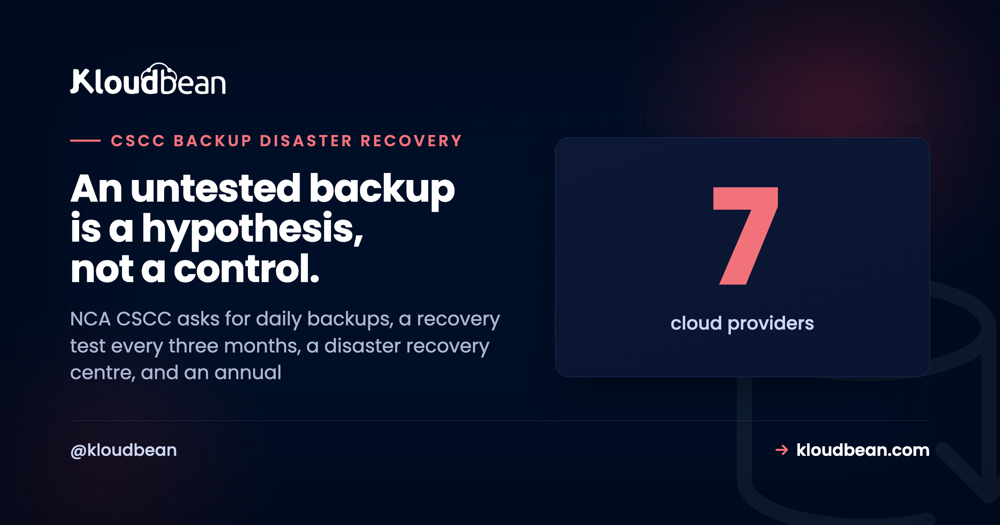

CSCC Backup and Disaster Recovery: What Saudi Critical Systems Must Prove

Backups are the control everyone believes they already have. The CSCC requirements are stricter than "we take backups", and the gap usually shows up in one specific place: whether you can demonstrate a successful restore, recently, with a record of it. NCA asks for that every three months. This walks through subdomain 2-8 and domain 3, what each control requires, and where the infrastructure work ends and your organisation's work begins.
Online and offline backup coverage across all critical systems (2-8-1-1), backups taken at intervals set by your risk assessment with NCA recommending daily for critical systems (2-8-1-2), and secured access, storage, and transfer of backups protected from destruction, unauthorised access, or modification (2-8-1-3). Critically, control 2-8-2 requires a test at least every three months to confirm backups can actually be recovered. On the resilience side, domain 3 requires a disaster recovery centre and DR plans tested at least annually.
The controls, precisely
| Control | Requirement |
|---|---|
| 2-8-1-1 | Scope and coverage of online and offline backups shall cover all critical systems |
| 2-8-1-2 | Backup within planned intervals per risk assessment; NCA recommends daily for critical systems |
| 2-8-1-3 | Secure access, storage, and transfer of backups and media; protect from destruction, unauthorised access, or modification |
| 2-8-2 | Periodical test at least every three months to determine the efficiency of recovering backups |
| 3-1-1-1 | Establish a disaster recovery centre for critical systems |
| 3-1-1-2 | Incorporate critical systems within disaster recovery plans |
| 3-1-1-3 | Test the efficiency of DR plans for critical systems at least annually |
| 3-1-1-4 | NCA recommends periodical live disaster recovery testing |
Online and offline, not just one
Control 2-8-1-1 says online and offline. That wording matters and it is easy to skim past. A snapshot sitting in the same cloud project as the system it protects is an online backup. It covers hardware failure, a bad deployment, and accidental deletion of a row. It does not necessarily protect you against an incident that reaches the account itself, whether that is ransomware, a compromised privileged credential, or a mistaken bulk delete.
Offline, or at minimum strongly separated, copies exist for that scenario. In cloud terms this usually means a separate secured storage location with its own access controls, ideally with object versioning and a retention lock so copies cannot be quietly removed. The principle is that whoever can break production should not be able to break the backups with the same credential.
Daily is a recommendation, and a sensible default
Control 2-8-1-2 sets the interval by your own risk assessment, then adds that NCA recommends daily backups for critical systems. Read that as the expected baseline. If you choose a longer interval, you should be able to explain the risk assessment that justified it, because the deviation is what an auditor will ask about.
The question the interval really answers is how much data you can afford to lose, which is your recovery point objective. Daily backups mean up to a day of writes at risk. For a system with continuous transactions, daily snapshots plus more frequent database-level protection is a more honest answer than a single nightly job.
The control most organisations fail: 2-8-2
This is the one worth reading twice. Every three months, you must test that backups can actually be recovered. Not verify the job succeeded, not check the file exists, but determine the efficiency of recovering.
The reason this exists is that backup failure is usually silent. A job reports success while excluding a volume that was added later. A database dump completes but omits a schema. An encrypted archive is written with a key nobody kept. Snapshots accumulate for months and the first genuine restore attempt happens during an incident, which is the worst possible moment to discover the gap.
A test that satisfies the control looks like: restore to an isolated environment, confirm the data is complete and the system starts, record how long it took, and document the result with a date. That last part is what turns an operational habit into evidence. And note the timing to complete the restore is worth recording for its own sake, because it is your real recovery time objective rather than the one in the plan document.
One caution when you build the test. Control 2-6-1-1 prohibits using critical systems data in any environment other than production without strict protection such as masking or scrambling, and 2-6-1-5 prohibits transferring production data to another environment. So a restore test cannot casually become a copy of production data sitting in a staging project. Design the test as an isolated recovery that is verified and then destroyed, and coordinate the approach with your compliance team.
Protecting the backups themselves
Control 2-8-1-3 covers access, storage, and transfer, and names destruction, unauthorised access, and modification. Practically:
- Backups in a separate secured location with their own access policy, not the general-purpose bucket.
- Encrypted at rest and in transit, consistent with 2-7-1-1 and 2-7-1-2.
- Object versioning so an overwrite does not destroy the previous good copy.
- Retention locks where the retention window is known, so deletion is refused rather than merely discouraged.
- Least-privilege access, with backup deletion rights held by as few identities as possible.
- Keys managed deliberately. An encrypted backup you cannot decrypt is not a backup.
Disaster recovery is a separate requirement
People conflate backups with disaster recovery, and CSCC treats them as different things in different domains. Backups (2-8) are about recovering data. Disaster recovery (3-1) is about continuing to deliver the service.
Control 3-1-1-1 requires establishing a disaster recovery centre for critical systems, 3-1-1-2 requires critical systems to be incorporated into DR plans, 3-1-1-3 requires testing DR plan efficiency at least annually, and 3-1-1-4 adds that NCA recommends periodical live DR testing. The word "live" is doing work there. A tabletop walkthrough is useful and it is not the same as failing over and serving real traffic from the recovery path.
Note the different cadences, because they are easy to mix up: recovery of backups is tested every three months (2-8-2), while DR plans are tested at least annually (3-1-1-3).
Where multi-zone architecture fits, and where it doesn't
Running across two zones with automated failover and load balancing gives you genuine resilience against the failure of a single zone, and it is the practical foundation for continuity of service. Be precise about what it is not, though. Multi-zone high availability is not a backup, because it replicates your mistakes: a bad migration or a deleted table propagates to the standby immediately. And a DR plan is a document with roles, decision points, and communications, not an architecture diagram.
So the three pieces do different jobs. High availability handles infrastructure failure. Backups handle data loss and corruption. The DR plan handles the human coordination when something larger goes wrong. CSCC asks for all three, and an audit will notice if you have brought only one.

What Kloudbean covers, and what stays with you
On managed enterprise engagements, Kloudbean builds and maintains the infrastructure half: multi-zone high availability across two zones for application servers and managed databases with automated failover and load balancing, daily automated backups written to a separate secured location, encryption in transit and at rest, retention and versioning policies applied to the periods you define, quarterly recovery tests carried out and documented, and the technical DR configuration covering multi-zone setup, failover, and restore procedures.
What stays with your organisation: defining the recovery time and recovery point objectives, since those are business decisions rather than technical ones; producing and owning the formal DR plan document with its roles and escalation paths; deciding retention periods against your legal obligations; and the classification and masking decisions that shape how a restore test may handle production data. We supply the technical foundation and the evidence, and the plan and the objectives remain yours.
Related reading
For the framework overview see NCA CSCC explained, and for the logging counterpart CSCC 18-month log retention. The general mechanics are in the server backups guide, with the baseline framework in NCA ECC compliant hosting and residency in data residency in Saudi Arabia. For the architecture side, vertical vs horizontal scaling and cloud load balancers explained.
Backups you have actually restored.
Kloudbean runs managed enterprise engagements with multi-zone high availability, daily automated backups to separate secured storage, retention and versioning policies, and quarterly recovery tests that are carried out and documented, on in-Kingdom infrastructure where required. Start a conversation at kloudbean.com.
Multi-zone HA · Daily backups · Separate secured storage · Quarterly tested restores · In-Kingdom hosting available
FAQ
How often does NCA CSCC require backups?
Control 2-8-1-2 sets the interval according to your organisation's risk assessment, and NCA recommends daily backups for critical systems. Treat daily as the expected baseline, and be ready to justify any longer interval with the risk assessment that supports it, because that deviation is what an auditor will question.
How often must backup recovery be tested under CSCC?
At least every three months, under control 2-8-2, to determine the efficiency of recovering critical systems backups. This is separate from testing disaster recovery plans, which control 3-1-1-3 requires at least annually. Mixing up the two cadences is a common mistake.
What is the difference between backups and disaster recovery in CSCC?
CSCC treats them as different domains. Backups (subdomain 2-8) are about recovering data. Disaster recovery (domain 3) is about continuing to deliver the service, requiring a DR centre, critical systems included in DR plans, and annual plan testing. You need both, plus the high availability that handles ordinary infrastructure failure.
Does CSCC require offline backups?
Control 2-8-1-1 states that the scope and coverage of online and offline backups shall cover all critical systems, so both are named. The reasoning is that a copy in the same account as the system it protects may not survive an incident that reaches the account, such as ransomware or a compromised privileged credential. Separated storage with its own access controls addresses that.
Is multi-zone high availability enough to satisfy CSCC?
No. High availability protects against infrastructure failure, but it replicates data problems rather than protecting against them, so a bad migration or deleted table reaches the standby immediately. CSCC asks separately for backups with tested recovery and for disaster recovery planning. High availability is one of three pieces, not a substitute for the others.
Can I use production data in a restore test?
Be careful here. Control 2-6-1-1 prohibits using critical systems data in environments other than production without strict protection such as masking or scrambling, and 2-6-1-5 prohibits transferring production data to another environment. Design the test as an isolated recovery that is verified then destroyed, and agree the approach with your compliance team rather than assuming.